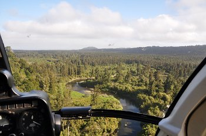
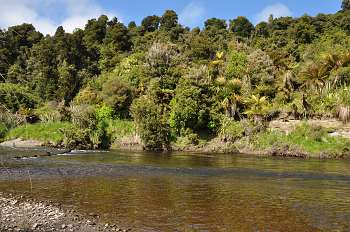
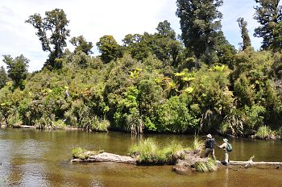
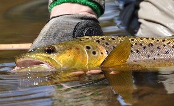

釣行日誌 ＮＺ編 「翡翠、黄金、そして銀塊」
原生林の中を蛇行する川へ
2010/11/24(WED)-1
二日目の朝も６時半にディーン君が迎えにきた。期待でふくらんだデイパックとウェーダーとウェーディングシューズをハイラックスに積み込んで、再び６号線を南へと走り出す。連日の長距離ドライブをものともしないディーンの体力には本当に感心させられる。今日も快晴。この所のウェストランドは晴天が続いており、例年にない渇水だと知らされる。行きがけに渡るホキティカ川も水量が少ない。
ジェームズさんのヘリポートに着くと、駐車場に自然保護局（DOC）のトラックが止まっている。何かの調査で職員達が山奥に入っているのだろう。ヘリのエンジンが掛かり、荷物を積み込み、今日も順調にヘリは飛び立った。昨日とは違う平野の方向へ飛びつつ高度を上げていくと、まもなく原生林の中を蛇行して流れている川が視界に入ってきた。

行ったことは無いが、なんとなく釧路川のようなイメージが沸いてくる川であった。昨日よりは短いフライト時間でヘリは高度を下げ始め、川のそばにある、原生林に囲まれた草むらにふんわりと着陸した。このあたりでは牧畜は行われていないようなので、自然の草むららしい。すばやく機外に出て荷物を取り出し、ヘリが去って行く。ロッドをつないでさぁ二日目の釣りの始まりだ。
今日の川の水は澄んでおり、昨日の川よりも水温が高そうであった。川底は小さな砂利と砂地であり、至る所に倒木、沈木が横たわっている。ディーン君、鰐部さん、そして僕。今日も三人の遡行が始まった。しばらくはブラインドで探りながら、今日も鰐部さんが先攻してそれらしいポイントを狙っていく。
カーブをいくつか越えたところで、ディーンが対岸へ渡り、高台からポイントを見下ろした。こちら岸から倒木が横たわっており、ちょっとした流れ込みができている。すると、ディーン君の「居る居る」の合図。鰐部さんがロイヤルウルフの16番をキャストした。数投で見事に中型がヒットし、なんなく鰐部さんが浅瀬に魚体をずりあげた。二日目の第１尾である。
まだそのポイントには二つ三つ魚影があるようなので、ひき続き伊藤が狙うことになった。グレイゴーストを結び、対岸の流れ込みにキャストし、着水と同時にラインを引いてフライにアクションを付ける。しかし、流速が早すぎて、ストリーマーがただ流されるだけになってしまっているようだ。ディーンがまずい顔をしてこちらを見ている。

「ゴウ！ ストリッピングをもっと早く！」
『わかっていますよぉ....』
と、心中オダヤカにはほど遠い心境で返事を返し、目を三角にして再びキャスト。ディーンが「オゥッ」とか「チッ」とか言うのが耳に入る。
喰いつけっ....と念じながらラインを引いていると、ゴツンとアタリがあった。やったね！とほくそ笑みながら取り込みにかかると、あっけなくロッドから重量感が消えた。バレたのだ。くっそーっと悪態をつきながら次のキャストへ入ろうとすると、
「ゴウ！ ニンフに交換だ。ボンブを使え！」
僕のへたくそなストリーマーに業をにやしたディーンが叫ぶ。昨日貸してもらった超重量級のニンフ、通称ボンブと必殺ニンフの組み合わせで釣ることにした。ニンフを結んだ後で、念のためと思って白いヤーンのインジケーターを付けてみた。そしてキャスト。
「おーいゴウ！ 何を付けたんだ？ 小鳥みたいにでかいインジケーターなんか要らないぞ！ 俺が言ったら合わせるんだ！」
すかさずディーンのダメだしが入り、すごすごとインジケーターを外す。お恥ずかしい限りである。しかし小鳥ほどはでかくないぞと心の中で反論してみるが、ガイドの意見は絶対的である。重いニンフに苦労しながらキャストを繰り返すが、どうもかんばしくない。結局、そのポイントで30分以上粘ってみたものの、ストライクには至らず、ディーンがあきらめて上流側へ移動し始めた。鰐部さんに申し訳ないなぁと思いつつ、ラインを巻き取って再び遡行が始まる。
澄み渡る青空、鬱蒼と茂る原生林、静かに蛇行して流れる澄んだ川。これぞウェストランドという絶景である。

左岸側、僕の釣りやすい方の岸に二股の流れ出しがあるポイントに来た。岸沿いに１尾定位しているらしく、少し距離のあるキャストで狙う。しかし、反応は無い。少し近づいて、土手の上からストリーマーをキャストしてアクションを付けながらストリッピングしてくると、突然、倒木の影から別の魚が飛び出して喰いついた。
「うわっ！ あんな所にいやがった！」
ロッドに掛かる心地よい重量感を楽しみながらリールにラインを巻き取る。ちょっと鱒が近くに寄ってきて、これはラインをたぐった方が良いかな？と思ったとたんにフッとばれてしまった。今日はどうもバラシが多いようだ。気を取り直して再び川を遡る。
僕がバラしている間にも、カツは着々と釣果を上げ、見事な鱒を釣り上げていた。ウェストランドのブラウンは本当に美しい。

ああ、鱒を抱く時の無上の幸せよ。しかし僕はまだ今日はボウズなのであった。
釣行日誌ＮＺ編 目次へ
サイトマップ
ホームへ
お問い合わせ